Rig de humanóide
Vamos criar um Rig simples e associar o mesmo a um modelo já feito. Vamos utilizar o Blu (http://www.blendswap.com/blends/characters/blu/) criado por Macouno (aka Dolf Veenvliet).
O Blu já vem com uma armadura muito simples mas nós vamos criar uma nova que é um pouco mais sofisticada.
Para este exercício utilize o ficheiro 38_Blu_limpo.blend
Após terminar este exercício, recomenda-se o treino com outros modelos ou melhorar a flexibilidade desta armadura incluindo controladores IK para os braços, dedos nas mãos, etc.
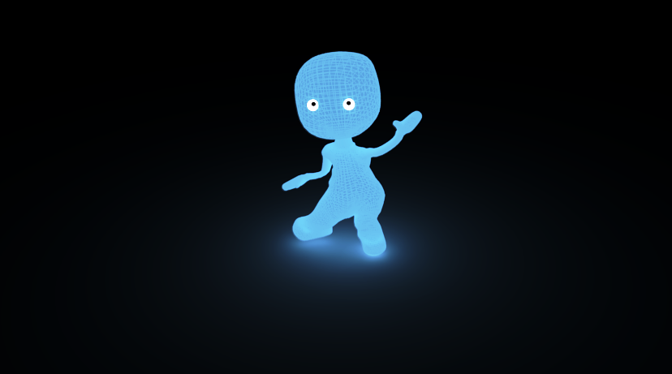1. Vamos começar por preparar o modelo: coloque a Origin no centro da geometria; faça Apply a eventuais rotações e alterações na escala.
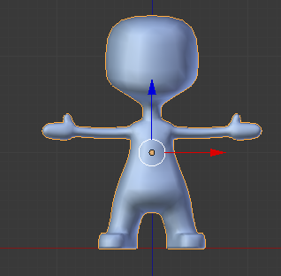 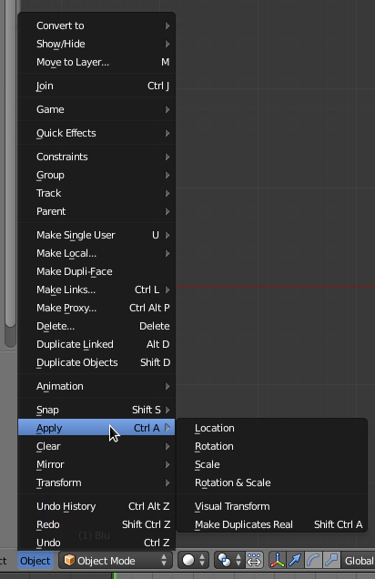2. Coloque-se em visão frontal, ortogonal, e coloque o 3D Cursor na Origin do modelo. [Selecione o modelo, clique em SHIFT+S e Cursor to Selected]
3. Adicione um Single Bone. No painel de opções da armadura, ative a opção X-Ray para conseguir ver o osso através da malha.
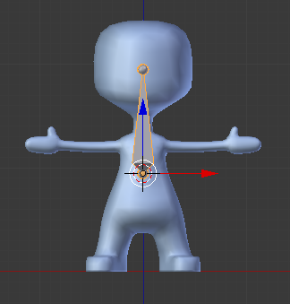 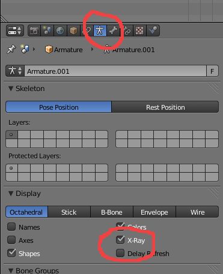4. Em visão lateral, rode o Bone e coloque-o em posição similar à da imagem. A Tip está dentro do modelo e o Bone está na linha e cintura.

5. Em Edit Mode, selecione a Tip do Bone e faça Extrude.
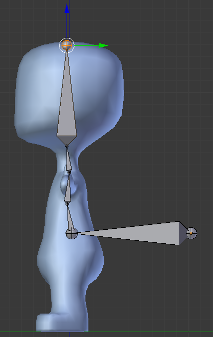No exemplo, fizemos Extrude 4 vezes. De todas as vezes, após o Extrude (E), bloqueámos o eixo Z (Z) e depois procedemos a alguns ajustamentos em Y para criar uma ligeira curvatura na espinha.
6. Selecione novamente a Tip do primeiro Bone (daqui em diante designado por Root) e faça extrude para baixo. Em visão frontal, mova a Tip do novo Bone no eixo Z até conseguir um posicionamento similar ao da imagem abaixo.
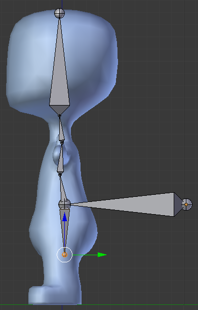 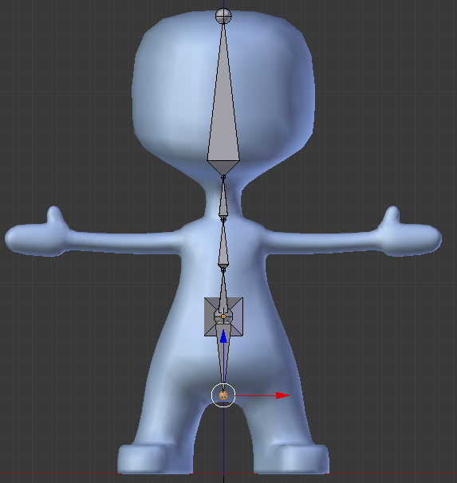7. Atribua nomes significativos a todos os Bones e ative a visibilidade dos Names. No nosso exemplo, utilizámos Root, Pelvis, Stomach, Chest, Neck e Head.
 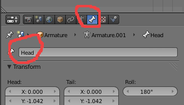
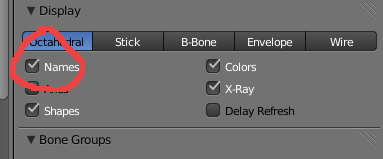
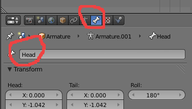
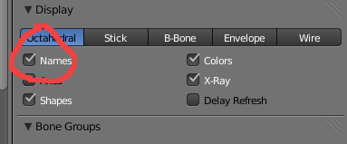
8. Coloque-se em visão frontal e ative a opção X-Axis Mirror (barra de Tools).
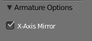9. Selecione o Tip e clique em E para fazer Extrude em Mirror. Com o X-Axis Mirror o Extrude normal (E) é substituído pelo Extrude em Mirror. Posicione os novos ossos de forma similar à imagem.
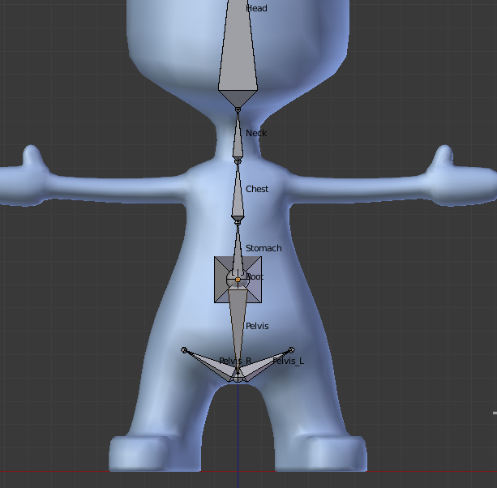10. Construa a armadura para as pernas e pés utilizando o Extrude. Proceda aos ajustamentos necessários reposicionando as Tips e os Roots. Procure manter os bones no centro da malha. As alterações que faz de um lado aplicam-se automaticamente ao outro.
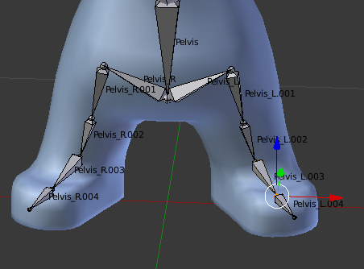 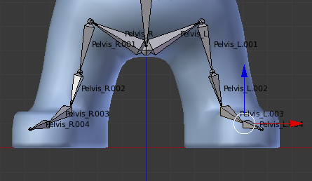 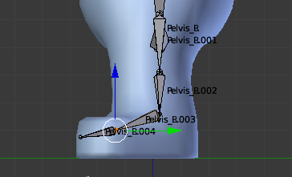11. Em visão frontal, selecione um dos Bones que ligam o Pelvis ao início da perna e apague-o.
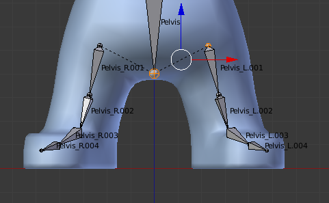12. Renomeie os novos Bones. Nós utilizámos Thigh, Leg, Foot e Toe. Mantenha a logica do _L e _R para indicar Esquerda e Direita!
13. Utilize os mesmos processos e procedimentos adotados nas pernas para criar a armadura para os braços.
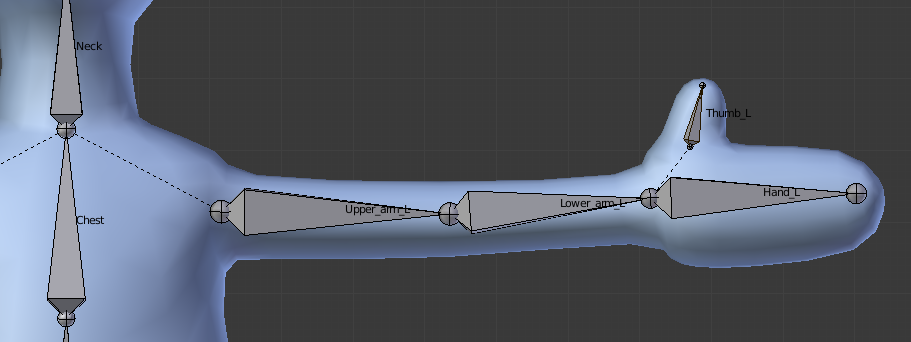14. Quando acabar esta parte, crie dois olhos e posicione os mesmo. Os olhos aqui criados são duas UV Sphere.
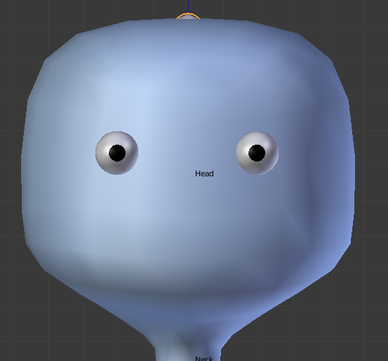15. Volte à sua armadura e em Edit Mode adicione novos bones para os olhos.
Utilizámos o mesmo procedimento. Extrude duas vezes e apagámos o bone que liga a Tip do bone Head ao root do bone do olho.
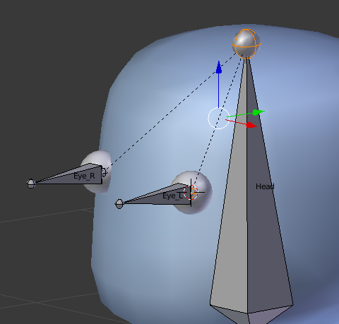O root do bone do olho está posicionado exatamente no centro da UV Sphere. Utilizámos o cursor 3D para posicionar com exatidão. Seleccionar UV Sphere e SHIFT+S (Cursor to Selected), selecionar root do bone do olho e SHIFT+S (Selected to Cursor)
16. Selecione os dois bones dos olhos e SHIFT+S, escolha Cursor to Selected. Faça SHIFT+A para adicionar um novo osso que vai surgir exatamente no meio dos dois bones.

Em visão lateral, utilize o widget para deslocar o novo bone afastando-o dos olhos (seta verde). Este bone chama-se Eye_target e vai servir para controlar para onde os olhos estão virados.
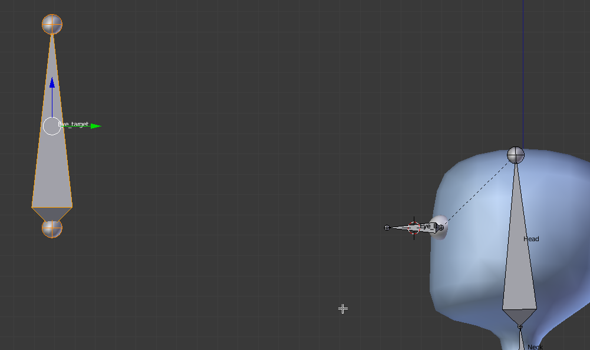17. Passe para Pose Mode. Selecione o Eye_L e aplique-lhe um Bone Constraint do tipo Track To. Repita o processo para o Eye_R.
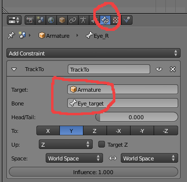Os bones dos olhos vão passar a apresentar uma cor diferente dos restantes bones indicando que têm um Constraint.
Em Pose Mode, se mover o Eye_target irá ver os bones dos olhos rodarem na sua direção.
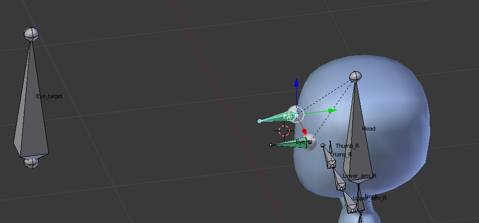18. Vamos agora configurar as pernas e pés com um setup de IK (Inverse Kinematics).
Em Edit Mode e em visão lateral, selecione o Tip da Leg e faça Extrude. Posicione o novo bone de acordo com a imagem e nomeie os bones IK_Leg_L e IK_Leg_R.
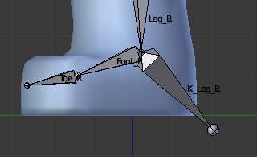 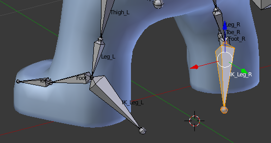19. Estes dois novos bones não vão ser “child” de nenhum outro bone nem vão estar ligados. Irão servir para podermos manipular livremente a IK Chain.
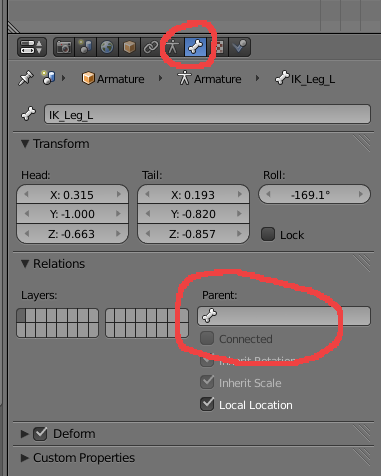Em cada um destes novos dois bones, apague o bone Parent e desative o Connected.
20. De seguida, vamos criar Pole Targets, bones que indicam a direção para onde os joelhos apontam para que as rotações dos joelhos surjam sempre com a direção correta.
Selecione o Foot e duplique-o (SHIFT+D), posicione o novo bone em frente do joelho e alinhado.
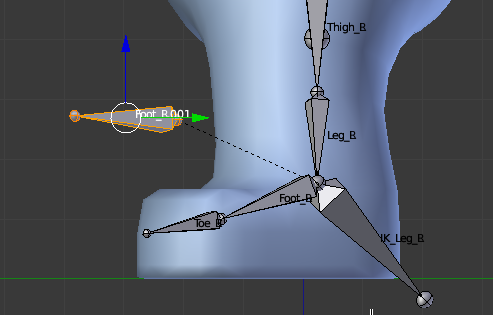Dê os nomes Knee_L e Knee_R aos novos bones.
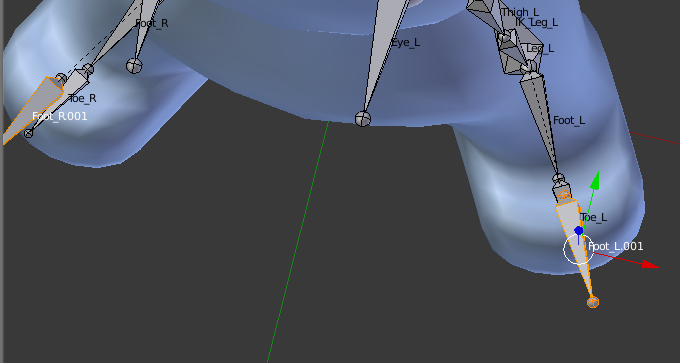21. Torne o Knee_L child do IK_Leg_L.
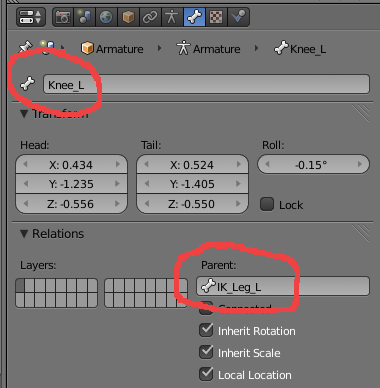Repita o processo para o Knee_R.
22. Em Pose Mode, selecione o Leg_L e aplique-lhe um Bone Constraint do tipo Inverse Kinematics.
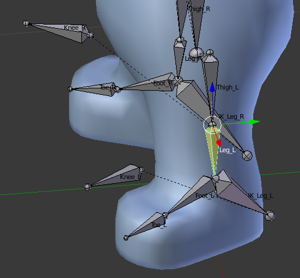Siga a imagem para perceber as configurações.
Por vezes, o bone ganha uma rotação algo estranha. Se necessário, ajuste o Pole Angle para compensar essa rotação.
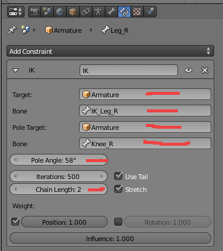Repita o processo no Leg_R.
23. Experimente em Pose Mode agarrar (G) o IK_Leg_L e IK_Leg_R e mova-o para ver se o joelho dobra corretamente.
No nosso caso foi necessário rever o Pole Angle mas tudo funcionou melhor depois de fletirmos ligeiramente os joelhos e ajustarmos a posição do Knee_L e Knee_R (em Edit Mode!).
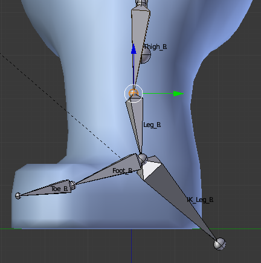Em Edit Mode, selecione a junta entre a Thigh_L e a Leg_L (o joelho) e desloque-a ligeiramente para a frente, fletindo ligeiramente o joelho.
24. A Armadura está pronta, é tempo de fazermos o Skinning, aparentar e associar a armadura à malha. Vamos começar pelos olhos.
Em Object Mode, selecione primeiro o olho esquerdo e depois a armadura (com SHIFT). Clique em CTRL+P e escolha a opção With Automatic Weights.
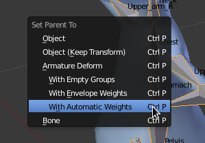Repita o processo para o olho direito.
25. O parentesco que acabámos de criar associou grupos de vértices da malha do objeto que constitui o olho à armadura. A associação tem em conta a proximidade e geralmente produz bons resultados iniciais que, ainda assim, têm de ser verificados e melhorados.
Selecione o olho esquerdo e passe para Edit Mode. Na janela Vertex Groups foram criados tantos grupos quantos os ossos mas, neste caso, queremos que...
- todos os vértices do olho estejam associados só a um osso (Eye_L)
- o osso Eye_L é o único que está associado aos vértices deste objeto.
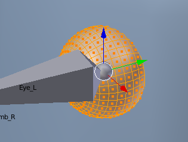 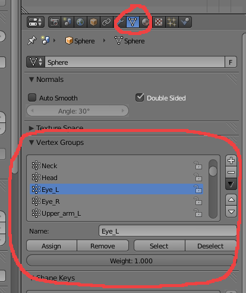Utilize as ferramentas para verificar a associação automática nos dois olhos.
Assign – atribui ao grupo (que tem o mesmo nome do osso) selecionado os vértices que estiverem selecionados na malha com o peso (Weight) definido.
Remove – remove os vértices que estiverem selecionados na malha do grupo
Select – seleciona os vértices que pertencem ao grupo selecionado
Deselect – retira a seleção dos vértices
26. Depois de verificar que todos os vértices do olho esquerdo estão associados ao grupo Eye_L e apenas ao grupo Eye_L, verifique se o mesmo acontece com o Eye_R.
Se tudo estiver bem, em Pose Mode mova o Eye_target e verá os olhos a apontarem na direção do Eye_target.
27. Em Object Mode, selecione a malha da personagem e depois a armadura (com SHIFT). Clique em CTRL+P e escolha a opção With Automatic Weights.
28. Repita o processo de verificação.
Se preferir, pode utilizar o método de Weight Painting para proceder a um skinning mais completo, criando zonas de influência total (a vermelho) e zonas intermédias (amarelo e verde).
Atenção:
- nem todos os bones deverão ter vértices associados! Existem alguns bones que não tem nenhum vértice associado (Eye_target, Knee_L, etc.).
- não deve ter apenas vértices com 1 (vermelho = máximo de Weight ou influência) e vértices com 0 (azul = mínimo de Weight ou influência). Uma boa deformação implica ter áreas com Weights diferentes.
Resultado da associação com Automatic Weigths ao bone Upper_arm_L

Upper_arm_L depois de corrigido
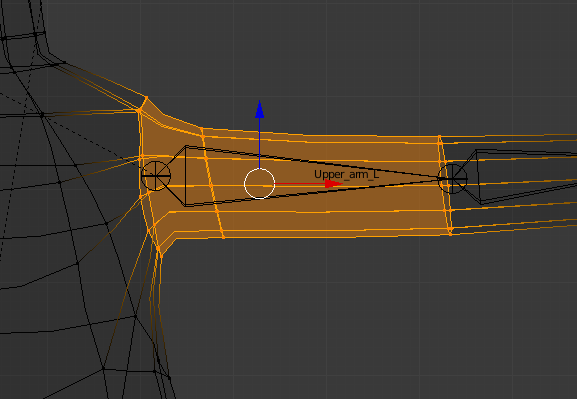Resultado da associação com Automatic Weigths ao bone Lower_arm_L
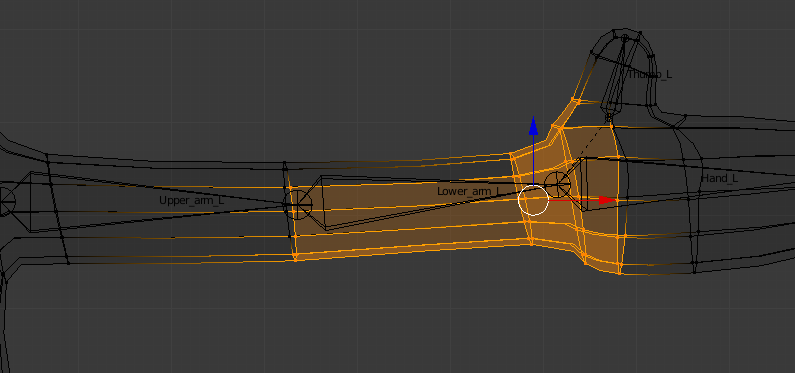Lower_arm_L depois de corrigido
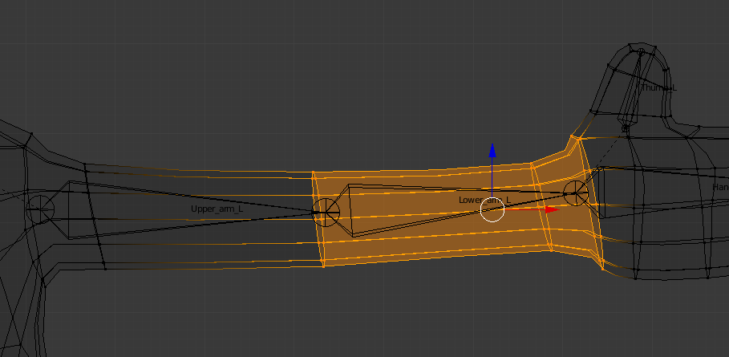Resultado da associação com Automatic Weigths ao bone Head
Repare como a cara da personagem iria deformar de forma estranha caso animasse o bone Head...

Resultado da associação com Weigth Painting ao bone Head
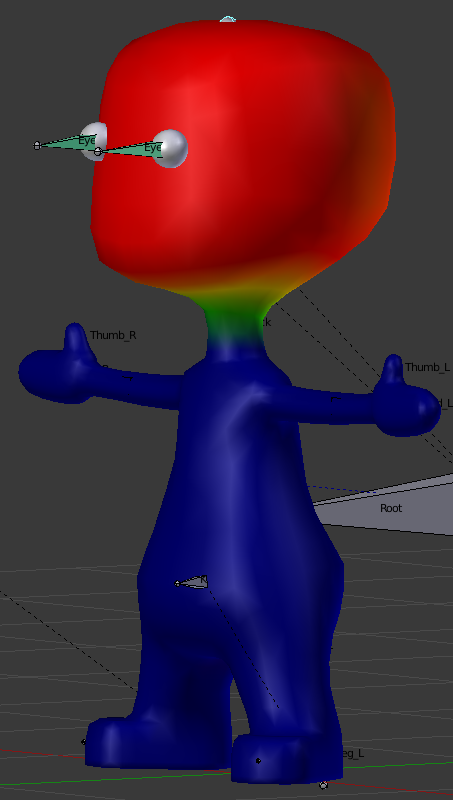